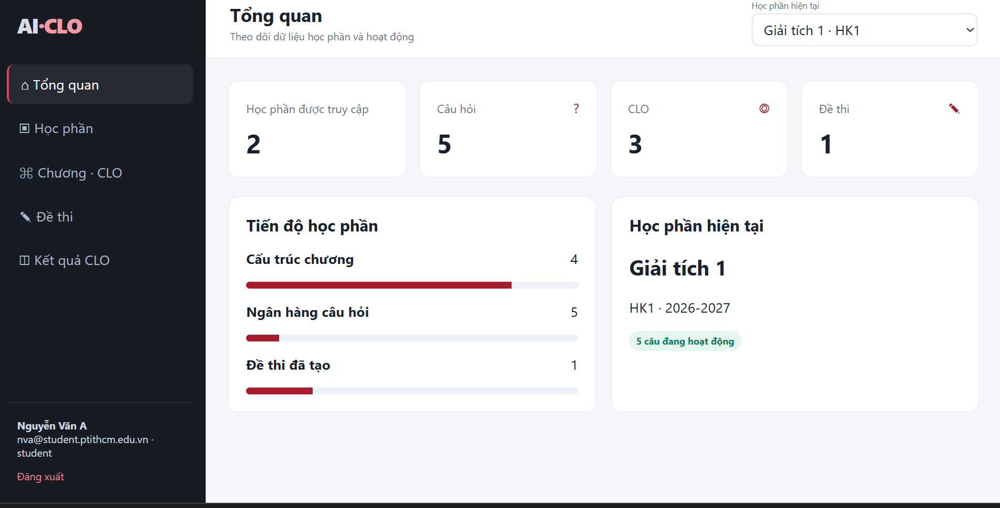
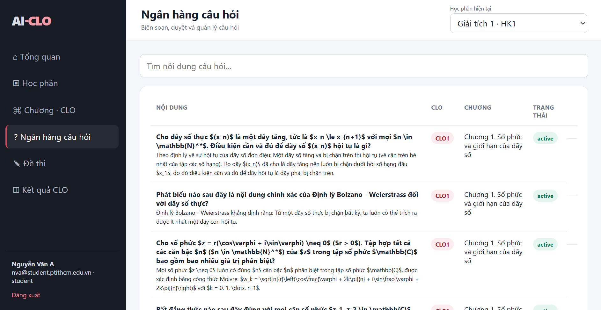
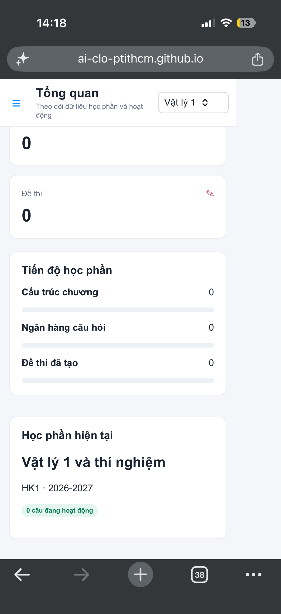
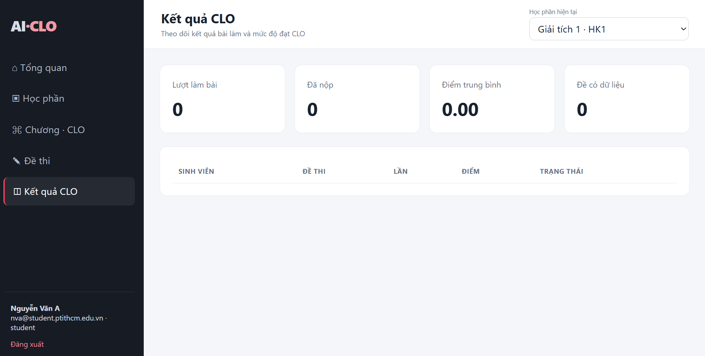

1. Đăng nhập và chọn học phần
Nhấn Đăng nhập, nhập tài khoản do quản trị viên cấp, sau đó chọn học phần hiện tại ở góc trên bên phải. Dữ liệu trên từng màn hình sẽ thay đổi theo học phần đang chọn.

Các thao tác chính được sắp xếp theo đúng quy trình sử dụng. Chức năng hiển thị sẽ phụ thuộc vào vai trò quản trị viên, giảng viên hoặc sinh viên.
Nhấn Đăng nhập, nhập tài khoản do quản trị viên cấp, sau đó chọn học phần hiện tại ở góc trên bên phải. Dữ liệu trên từng màn hình sẽ thay đổi theo học phần đang chọn.


Giảng viên chọn số câu, chương, chủ đề và tỉ lệ CLO để tạo đề. Có thể dùng chức năng Làm thử để kiểm tra trước. Sinh viên mở mục Đề thi, chọn bài được phép làm, trả lời và nộp bài.

Sinh viên mở Kết quả CLO để xem các bài đã nộp. Nhấn Nhận xét của Gemini để nhận phân tích từng CLO, điểm mạnh, phần cần củng cố và hành động đề xuất. Nếu chưa có bài nộp mới, hệ thống dùng lại nhận xét đã lưu.
